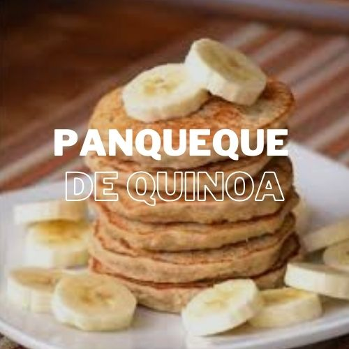

Ingredientes
- 1 taza de harina de quinua
- 1/2 taza de harina de avena
- 1/2 cucharadita de polvo de hornear
- 1 pizca de sal
- 2 cucharadas de miel de abeja (opcional para la mezcla)
- 1 huevo
- 1 taza de leche (puede ser leche de almendras o de quinua)
- 1/2 cucharadita de esencia de vainilla
- 1 cucharada de aceite de coco o mantequilla derretida
- Miel de abeja adicional para servir
- Frutas frescas para decorar (opcional)
Instrucciones
- En un tazón grande, mezcla la harina de quinua, la harina de avena, el polvo de hornear y la sal.
- En otro tazón, bate el huevo y agrégale la leche, la esencia de vainilla y el aceite de coco derretido.
- Incorpora los ingredientes líquidos a los ingredientes secos y mezcla hasta obtener una masa homogénea. Deja reposar la mezcla por 5 minutos.
- Calienta una sartén antiadherente a fuego medio y engrasa ligeramente con aceite de coco.
- Vierte 1/4 de taza de la mezcla en la sartén caliente y cocina por aproximadamente 2 minutos o hasta que aparezcan burbujas en la superficie. Da vuelta el panqueque y cocina por 1-2 minutos adicionales.
- Repite el proceso con el resto de la masa.
- Sirve los panqueques calientes con miel de abeja y frutas frescas al gusto.
Información Nutricional
| Calorías | 280 kcal |
|---|---|
| Proteínas | 10g |
| Grasas | 8g |
| Carbohidratos | 45g |
| Fibra | 6g |
| Azúcares | 8g |
| Calcio | 120 mg |
| Hierro | 3 mg |
| Vitamina C | 2 mg |